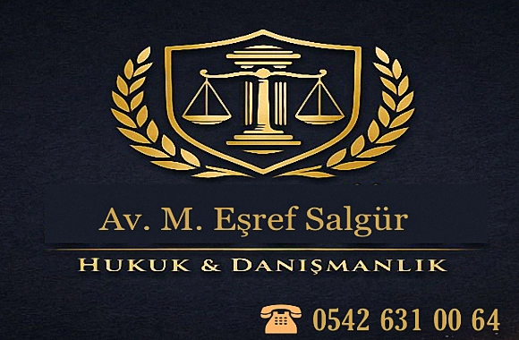

Nitelikli Dolandırıcılık ve Cezaları
Dolandırıcılık Mağdurlarına Etkin Hukuki Destek.
Makaleyi Oku →Boşanma, miras, ceza ve iş hukuku başta olmak üzere; geniş hukuki yelpazede, Uşak ve çevre illerde haklarınızı korumak için stratejik çözümler sunuyoruz.
📞 Hemen Danışın
Uşak Merkezde yer alan ofisimiz, müvekkillerine stratejik çözüm ortaklığı sunar. Uşak Barosu avukatlarından, Avukat M.Eşref Salgür, Uşak merkez başta olmak üzere, bireysel ve kurumsal müvekkillerine dava takibi ve hukuki danışmanlık hizmetleri sunmaktatadır. Bununla birlikte, Ege Bölgesinin diğer illerinde de dava ve iş takibi yapmaktadır. Uşak Avukat arayışınızda; deneyim, gizlilik ve hızlı sonuç odaklı yaklaşımımızla yanınızdayız.
Hukuk sisteminde her somut olay kendine özgü şartlar taşır. Bu nedenle standart çözümler yerine her dosya için özel değerlendirme yaparak strateji belirliyoruz. Müvekkil haklarının en etkin şekilde korunmasını amaçlıyoruz.
Avukatlık Kanunu ve meslek kuralları çerçevesinde hizmet sunmaktayız
Tüm hukuki süreçlerde mevzuat ve içtihatlara uygun hareket edilmektedir
Müvekkil bilgileri Avukatlık Kanunu m.36 kapsamında korunmaktadır
Dava süreçleri hakkında müvekkiller düzenli olarak bilgilendirilir
Her dosya kendi koşulları içinde değerlendirilir ve strateji belirlenir
Uşak Barosu'na kayıtlı, sicil numarası 712
Fevzi Çakmak Mahallesi, İlay sok. No:4/13 de — fiziksel ofis
Telefon ve e-posta ile randevu alınabilir
Türkiye Barolar Birliği meslek kurallarına uygun faaliyet
Müvekkillerimizin en çok sorduğu soruları uzmanlık alanlarımıza göre derledik.
Karahallı, Sivaslı veya çevre ilçelerdeki müvekkillerimizle ön görüşmeleri telefon veya görüntülü arama ile gerçekleştirebiliyoruz. Ancak resmi vekaletname ve dosya teslimi süreçlerinde ofisimizde sizi ağırlamaktan memnuniyet duyarız.
Her zaman şart değildir; ancak usul hatalarının önüne geçmek ve hak kaybı yaşamamak için dava açmadan evvel bir avukata danışmak doğru bir yaklaşım olur.
Davanın türüne ve mahkemenin iş yüküne göre değişmekle birlikte, ortalama süreler hakkında ilk görüşmede bilgi verilmektedir.
Ceza avukatı tutmak zorunlu değildir, ancak bir avukatla çalışmak haklarınızı korumak için önemlidir.
Ücretlerimiz, Türkiye Barolar Birliği'nin belirlediği "Avukatlık Asgari Ücret Tarifesi" esas alınarak, davanın niteliği ve iş yüküne göre şeffaf bir şekilde belirlenmektedir. İlk görüşmede tüm mali süreç hakkında bilgilendirilirsiniz. .
Evet, size özel vakit ayırabilmemiz için randevu almanız rica olunur.
Dolandırıcılık Mağdurlarına Etkin Hukuki Destek.
Makaleyi Oku →Zina Nedeniyle Boşanma, Nafaka ve Tazminat Hakları
Makaleyi Oku →Şiddet Nedeniyle Boşanma, Nafaka ve Tazminat Hakları
Makaleyi Oku →Boşanma halinde ev, araba, banka hesapları ve diğer mal varlıklarının nasıl paylaşılır.
Makaleyi Oku →Merkez ilçede tüm hukuki süreçleriniz için yanınızdayız.
Banaz’da miras, boşanma ve ceza hukuku hizmetleri sunuyoruz.
Gayrimenkul ve tazminat davalarında Çivril’de çözüm ortağınızız.
Eşme ilçesinde güvenilir avukat ve danışmanlık hizmeti.
Karahallı’da tüm hukuki süreçlerde profesyonel destek.
Sivaslı’da dava takibi ve hukuki danışmanlık hizmeti.
Ulubey ilçesinde profesyonel ve güvenilir hukuk çözümleri.
Gediz bölgesinde tüm hukuki süreçler için danışmanlık sağlıyoruz.